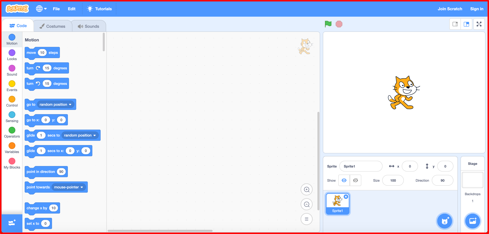
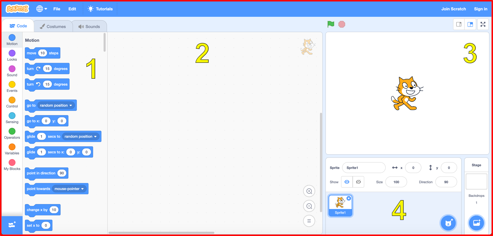
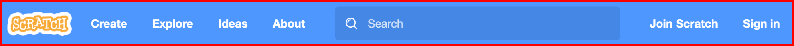
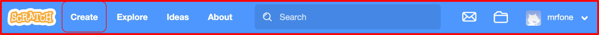
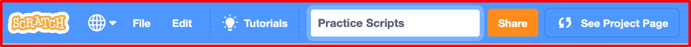
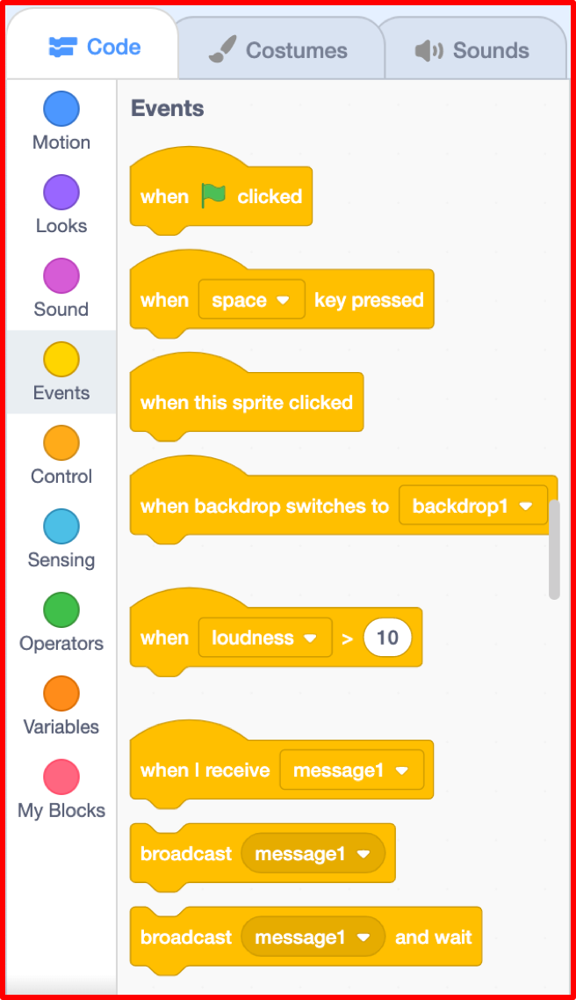
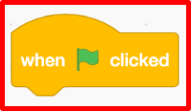
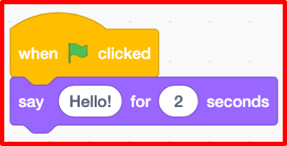
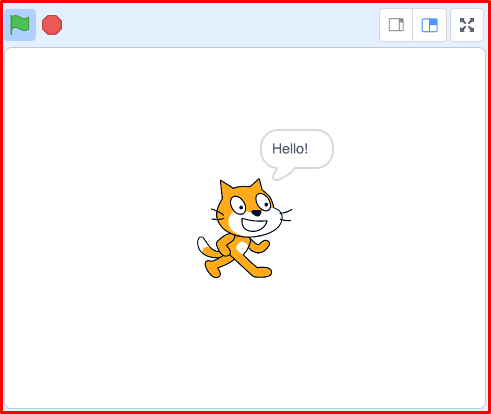
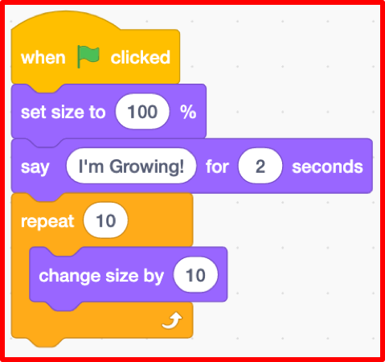

A Virtual LOLcat in Scratch
Table of Contents
Grey overlay
Pink
Green
Blue
Cream
Liliac
Purple
Yellow
1 Objectives
Developing Programming and Development, Algorithms, Literacy, Information Technology Learning Strands:
- Understand what a Graphical User Interface is (GUI).
- Understand how to use Scratch Blocks.
- Understand that programs run by following a sequence of instructions.
- Understanding of arithmetic operators and loops.
- Understand how to output text.
- Use correct grammar, punctuation and spelling of keywords throughout this project.
- Use a variety of software to manipulate and present digital content.
2 An introduction to Scratch
 Scratch is a programming language that can be used to make small programs and games. Above is the Graphical User Interface (GUI) for Scratch. A GUI is how the a user interacts with software.
Learn It
- The Scratch GUI is split into 4 sections
- These are listed below

- The key areas are:
- The Blocks Palette
- The Scripts Area
- The Stage
- The Sprite List
Code It
If you've used Scratch before and already have an account, then you can skip this section.
- Goto THIS LINK to the Scratch website
- Click on the Join Scratch button in the menu bar.


- Fill in the details required. Be sure to pick a username and password you will remember.
- You may need to use your personal email address when you register.
- Once you are logged in, click on the Create button in the menu bar.

- Now we can name our file. Call it Practice Scripts.

- Scratch works by dragging blocks of code from the blocks palate into the script area. These blocks then can be stacked to create scripts.
- Let's make a simple Script. From the Blocks Palate, choose Events.

- Now, click and drag the following block on to the Scripts Area.

- Next choose the Looks scripts from the menu.
- Click and drag the say Hello! for 2 secs block and snap it to the When flag clicked block.

Run It
- To run our Scratch script, you just need to click on the Green Flag in the Stage area.

Code It
- Now let's try something a little more complicated.
- Delete your current script by dragging it back to the Blocks Pallette.
- We're going to make the cat grow. You'll need to search through the Blocks Pallette to find the appropriate blocks, and build the script as it's shown below.
- Now click on the Green Flag in the Stage area to run your code.

Learn It: Uploading Your Work Video Tutorial
Video Tutorial - You'll upload your completed work to www.BourneToLearncom for marking. The video tutorial below explains how to do it:
3 Badge It - Basic Scripts
Learning strand: Programming and Development and algorithms
Badge It: Silver - Cat Talk
- After you have completed the code in Scratch as shown above, try changing what the cat says and how long it says it for.
Follow the video tutorial on how to upload your work and upload your work to www.bournetolearn.com.

Badge It: Gold - Cat Shrink!
- Try to change the script so that after the cat has grown, it says "I'm Shrinking!" and then returns to it's regular size.
- HINT: You can use negative numbers in Scratch
Badge It: Platinum - Cat moving in circles
- To get your platinum badge, you need to make the cat move around in a large circle.
- You'll probably want to look into using a loop to achieve this.